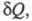
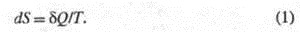
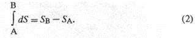
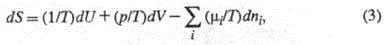
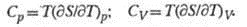
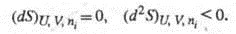

Термодинамическая энтропия — аддитивная термодинамическая величина, функция состояния термодинамической системы.
Энтропия, функция состояния S термодинамической системы, изменение которой dS для бесконечно малого обратимого изменения состояния системы равно отношению количества теплоты полученного системой в этом процессе (или отнятого от системы), к абсолютной температуре

Величина dS является полным дифференциалом, т.е. ее интегрирование по любому произвольно выбранному пути дает разность между значениями энтропии в начальном (А) и конечном (В) состояниях: 
Теплота не является функцией состояния, поэтому интеграл от δQ зависит от выбранного пути перехода между состояниями А и В. Энтропия измеряется в Дж/(моль·град). где р - давление, μi - химический потенциал i-го компонента.
Простые формулы связывают энтропию с теплоемкостями при постоянном давлении Ср и постоянном объеме Cv: С помощью энтропии формулируются условия достижения термодинамического равновесия системы при постоянстве ее внутренней энергии, объема и числа молей i-го компонента (изолированная система) и условие устойчивости такого равновесия: Это означает, что энтропия изолированной системы достигает максимума в состоянии термодинамического равновесия. Самопроизвольные процессы в системе могут протекать только в направлении возрастания энтропии.
Для изолированных систем второй закон утверждает: dS і 0, (4.2) т.е. энтропия изолированных систем в необратимых процессах может только возрастать, а в состоянии термодинамического равновесия она достигает максимума (dS = 0,
d 2S < 0).
При любых процессах, протекающих в термодинамических изолированных системах, энтропия либо остается неизменной, либо увеличивается. Таким образом, энтропия указывает направление самопроизвольно протекающих процессов. Рост энтропии указывает на приближение системы к состоянию термодинамического равновесия. В состоянии равновесия энтропия принимает максимальное значение. Закон возрастания энтропии можно принять в качестве еще одной формулировки второго закона термодинамики.